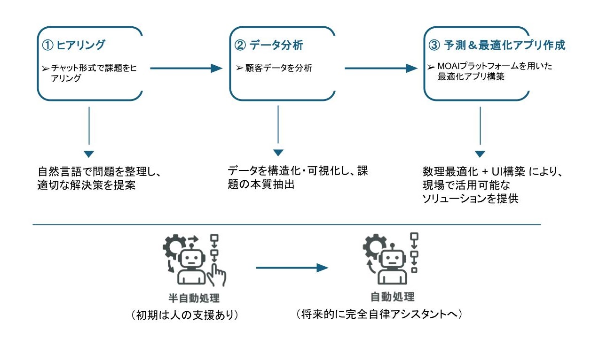

- Home
- Products
- AGI4OPT
AGI4OPT
Multi Agent型の実際の最適化問題解決サービス
AGI4OPT（汎用最適化AIサービス）は、現代のビジネス現場における最適化課題に対応するために設計されたAIベースの意思決定支援サービスです。次の3つのフェーズで構成され、企業が直面する複雑な意思決定や効率化の課題に対応します。
ヒアリング機能
お客様との対話を通じて、課題・制約条件・利用可能なリソースなどを丁寧にヒアリングし、問題を整理・構造化します。さらに、適切な解決案の提案まで行います。
データ分析機能
ヒアリング結果に基づき、お客様が準備したデータを活用して詳細な分析を実施します。データから洞察を引き出し、次の最適化ステップへとつなげます。
予測＆最適化アプリケーション作成機能
分析結果に基づき、予測や最適化を通じて企業課題の解決に役立つアプリケーションをMOAIプラットフォームをベースに構築します。

最適化課題解決プロセスへのAI導入の必要性
現代のビジネス環境では、市場の変動性、サプライチェーンの複雑化、限られたリソースといった要因の中で、常に最適な意思決定が求められています。例えば、生産計画、在庫管理、人員配置など、多くの業務プロセスには、「いかに効率を最大化し、コストを最小化するか」といった最適化の視点が不可欠です。
しかし、これらの課題はしばしば、膨大なデータ、複数の関連要因、相互に矛盾する制約条件が絡み合い、人手や従来の分析手法のみでは、網羅的かつ迅速に最適解を導き出すことが困難となっています。
AGI4OPTはこうした課題に対し、最先端のAI技術を活用し、お客様が抱える固有の状況を理解したうえで、データに基づいた合理的な解決策の候補を提示することで、意思決定プロセスの効率化と質の向上を支援します。
AGI4OPTの主な特徴
AIによる課題のヒアリングと構造化
AGI4OPTは、対話形式または構造化された入力インターフェースを通じて、具体的な課題、目的、利用可能なリソース、既存の制約条件などを丁寧にヒアリングします。これにより、複雑なビジネス状況をAIが分析可能な形に整理します。
広範なビジネス領域への対応
特定の業務や業界に限定されず、財務計画、運用効率化、リスク分析、人事戦略など、企業活動における様々な最適化課題への適用を想定しています。
データに基づいたソリューション提案
ヒアリングによって把握した状況と入力されたデータを基に、現実的な実行可能性と期待される効果を考慮したソリューション案を提示します。
状況変化への適応性
継続的な利用や新たなデータの入力により、AIモデルは学習し、より高精度な分析や提案が可能になります。ビジネス環境や社内状況の変化にも対応しやすくなります。
意思決定プロセスの効率化支援
課題分析から解決策の候補提示までの時間を短縮し、担当者がより深い検討や戦略的な業務に時間を費やすことを支援します。これにより、リソースの有効活用につながります。